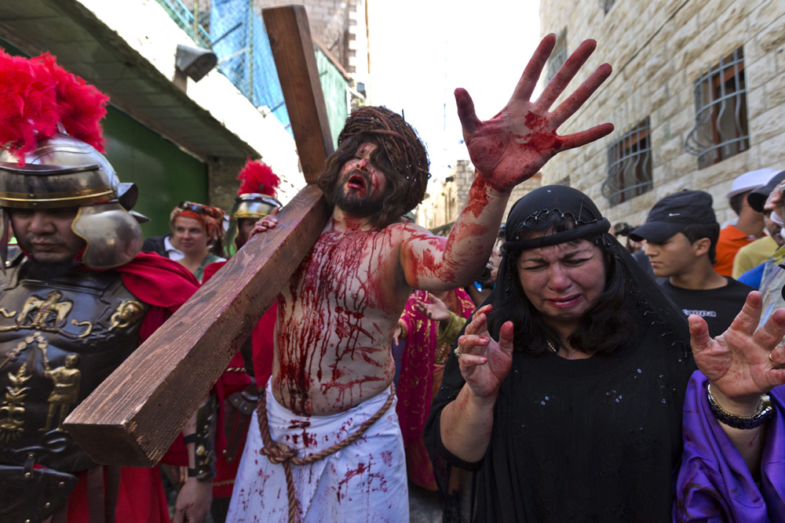
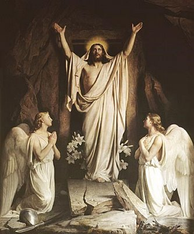
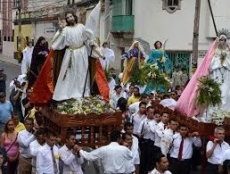

Semana Santa
.jpg)
La Semana Santa es la conmemoración anual cristiana de la Pasión, Muerte y Resurrección de Jesús de Nazaret. Por eso, es un período de intensa actividad litúrgica dentro de las diversas confesiones cristianas. Da comienzo el Domingo de Ramos y finaliza el Domingo de Resurrección,1 aunque su celebración suele iniciarse en varios lugares el viernes anterior (Viernes de Dolores) y se considera parte de la misma el Domingo de Resurrección. La fecha de la celebración es variable (entre marzo y abril según el año) ya que depende del calendario lunar. La Semana Santa va precedida por la Cuaresma, que finaliza en la Semana de Pasióndonde se celebra la eucaristía en el Jueves Santo, se conmemora la Crucifixión de Jesús el Viernes Santo y la Resurrección en la Vigilia Pascual durante la noche del Sábado Santo al Domingo de Resurrección

El Domingo de Pascua es una celebración que no se fija en relación al calendario civil. El Primer Concilio de Nicea (año 325) estableció la fecha de la Pascua como el primer domingo después de la luna llena tras el equinoccio de primavera en el hemisferio norte. Qué se celebra el domingo de Pascua El fin de semana largo de Semana Santa es conocido por todos los que pueden gozarlo como días festivos y en la mayoría de los casos, no trabajar. Pero, ¿qué se celebra en Pascua? Se trata de la fiesta central del cristianismo, en la que se conmemora, de acuerdo con los evangelios canónicos, la resurrección de Jesús al tercer día después de haber sido crucificado.

La Pascua marca el final de la Semana Santa, en la que se conmemora la crucifixión y muerte de Jesús. A la Semana Santa le sigue un período de cincuenta días llamado Tiempo pascual, que termina con el Domingo de Pentecostés. En algunos países, se acostumbra celebrar la alegría de la Resurrección escondiendo dulces en los jardines para que los niños pequeños los encuentren, con base en la leyenda del “conejo de pascua”. La costumbre más extendida alrededor del mundo, para celebrar la Pascua, es la regalar huevos de dulce o chocolate a los niños y a los amigos. A veces, ambas tradiciones se combinan y así, el buscar los huevitos escondidos simboliza la búsqueda de todo cristiano de Cristo resucitado.

El domingo de Pascua los creyentes celebran la resurrección con ceremonias de luz y alegría, ya que el misterio de la fe cristiana se manifiesta. Por ello hay procesiones religiosas y celebraciones litúrgicas. La tradición de los “huevos de Pascua” El origen de esta costumbre viene de los antiguos egipcios, quienes acostumbraban regalarse en ocasiones especiales, huevos decorados por ellos mismos. Los decoraban con pinturas que sacaban de las plantas y el mejor regalo era el huevo que estuviera mejor pintado. Ellos los ponían como adornos en sus casas
.jpg)
Vía Crucis de Atlixco, en el estado mexicano de Puebla, reúne desde hace más de un siglo en Semana Santa a un grupo de penitentes capaces de traspasar el umbral del dolor por su devoción, al salir en procesión encapuchados y descalzos, con grilletes y coronas de espinas.
Atlixco, un municipio situado a 30 minutos de Puebla capital y que fue nombrado recientemente Pueblo Mágico, acogió hoy la llamada procesión de los Engrillados, que se celebra cada Viernes Santo en medio de gran expectación.
"Es la fe, la devoción que tenemos para salir y para que este año nos vaya bien a nosotros y a la familia, una obra de agradecimiento", describe un engrillado a Efe los motivos que le llevan a salir cada año en la procesión.
Bajo el anonimato el devoto confiesa que lleva un lustro participando y que lo hace con orgullo por todos los favores que el Señor le ha dado.
En otros casos se agradece la cura de algún familiar que padecía una grave enfermedad.
"Es la fe, la devoción que tenemos para salir y para que este año nos vaya bien a nosotros y a la familia, una obra de agradecimiento", describe un engrillado a Efe los motivos que le llevan a salir cada año en la procesión. Bajo el anonimato el devoto confiesa que lleva un lustro participando y que lo hace con orgullo por todos los favores que el Señor le ha dado. En otros casos se agradece la cura de algún familiar que padecía una grave enfermedad. "Mi papá tuvo una operación y el doctor dijo que, una de dos, o se iba o se quedaba, y vine a prometer que iba a salir tres años de engrillado", comenta otro participante que también prefiere reservar su identidad "Es la fe, la devoción que tenemos para salir y para que este año nos vaya bien a nosotros y a la familia, una obra de agradecimiento", describe un engrillado a Efe los motivos que le llevan a salir cada año en la procesión. Bajo el anonimato el devoto confiesa que lleva un lustro participando y que lo hace con orgullo por todos los favores que el Señor le ha dado. En otros casos se agradece la cura de algún familiar que padecía una grave enfermedad. "Mi papá tuvo una operación y el doctor dijo que, una de dos, o se iba o se quedaba, y vine a prometer que iba a salir tres años de engrillado", comenta otro participante que también prefiere reservar su identidad
Espiritualmente reciben preparación a través de encuentros, pláticas y lecturas de la Sagrada Escritura. Sin embargo, no todos aguantan este sacrificio. "He visto a compañeros que se desmayan, les tienen que quitar las cadenas porque no aguantan, voluntarios de la Cruz Roja se los tienen que llevar", relata otro engrillado. "La preparación es más que nada espiritual; se necesita tener mucha fe, es algo que no se puede describir; es dolor, cansancio, pero no se compara lo que sufrimos nosotros a lo que sufrió Jesús", señala el joven. Arrastran pesadas cadenas, que a veces superan los 100 kilos, con la cara tapada y una corona de espinas. En el pecho, los brazos, las piernas y en la espalda se clavan más espinas que una semana antes van a buscar descalzos a un cerro cercano, señala administradora del Exconvento de San Francisco, Judith Sánchez del Razo. En sus manos cargan una bandeja con limones, lo único que toman durante todo el recorrido para evitar la deshidratación. Caminan bajo la atenta mirada de fieles y miles de visitantes de diferentes partes de México.
Para los iztapalapences, y para los no tanto, Semana Santa es una de las fechas más importantes en la que los noticieros chonchos recorren las calles sin miedo, dicen mil y un maravillas de Iztapalapa; los helicópteros sobre vuelan los ocho barrios muy al pendiente de lo que pasa (lástima que no estén así los otros 359 días); los turistas se dan cita a pesar de ser un lugar peligroso, y otros chilangos ven todo con mucho folklor. Pero, sobre todo, lo que más abunda en estos días es la hipocresía.
La Semana Santa en Roma comienza el Domingo de Ramos cuando el Papa ofrece la “Misa de bendición” en la Plaza San Pedro a las 9:30 de la mañana. Como es ya tradición, al terminar la misa el papa recita un mensaje especial a los jóvenes del mundo: el “Angelus”. El Lunes Santo y el Jueves Santo el Papa vuelve a ofrecer misa. La de la mañana, conocida como “La Misa del Crisma” y en la que el papa bendice el Olio Santo (crisma) que sirve para uno de los sacramentos de la Iglesia Católica. El significado de esta misa es la unión de la Iglesia Católica como un único cuerpo y sentir alrededor del mundo. El Viernes Santo no se celebran misas hasta la Vigilia Pascual, aunque en la Basílica de San Pedro, y en las principales Iglesias de Roma podemos encontrar distintos coros cantando. Por la noche se realiza una de las procesiones más solemnes y hermosas : el “Via Crucis” guiado por el Papa, donde se reconstruye y conmemora el camino doloroso de Jesús hasta su crucifixión, que parte del interior del Coliseo y termina en las Colinas del Palatino.
El periodo de la Cuaresma está llegando a su fin y tanto los cristianos locales como los miles de peregrinos que han acudido a la Ciudad Santa se están preparando para celebrar Semana Santa y su culminación en el Domingo de Resurrección, la fecha de mayor importancia del año litúrgico cristiano. No hay nada como vivir la Semana Santa en Jerusalén. Celebrar los grandes eventos de la historia de salvación y de la vida de Jesús en los mismos lugares en los que ocurrieron es una experiencia de fe conmovedora e inolvidable para todos los creyentes. Oficialmente, Semana Santa comienza al conmemorarse la entrada de Jesús en Jerusalén el Domingo de Ramos (1 de abril), con la misa matinal de las 8 en la Iglesia del Santo Sepulcro y la tradicional procesión de Palmas durante la tarde. Más tarde, a las 14.30, miles de cristianos de todo el mundo marcharán jubilosamente desde Betfagé, rezando y cantando en todos los idiomas, descendiendo por la ladera occidental del Monte de los Olivos en camino a la Ciudad Vieja, a través del valle de Kidrón. El Jueves Santo, el Patriarca Latino de Jerusalén celebrará a las 8 de la mañana la Institución de la Eucaristía en el Santo Sepulcro y por la tarde, a las 15.30, los Franciscanos efectuarán su peregrinación tradicional al Cenáculo (la Sala Superior) en el Monte Sion. Por la noche, a partir de las 21 horas, peregrinos y cristianos locales velarán con Jesucristo durante una hora sagrada de meditación en el Huerto de Getsemaní, seguida de una procesión a la luz de velas a la iglesia de San Pedro en Gallicantu, que según la tradición es el lugar en el que Jesús pasó la noche después de ser arrestado. En Viernes Santo, a las 8 de la mañana, se conmemorarán la Pasión del Señor y la crucifixión en el Calvario, seguidas del Vía Crucis en la Vía Dolorosa a las 11.30, liderado por el Custos (Custodio) franciscano de Tierra Santa. Posteriormente, a las 8.10 de la mañana, se celebrará el funeral de Cristo en el Sepulcro, un evento exclusivo de la Iglesia de Jerusalén, que reconstruye la deposición del cuerpo de Cristo en la tumba.
Madrid conmemora intensamente la pasión y muerte de Jesucristo, no sólo en la exaltación de su devoción, sino en la celebración de otros actos culturales paralelos. Mientras iglesias y basílicas programan conciertos de música sacra, las distintas cofradías salen a la calle con los pasos que llevan preparando durante todo el año y los mejores restaurantes y pastelerías de la ciudad añaden a sus cartas platos típicos de Semana Santa con un toque castizo. De Domingo de Ramos al Domingo de Resurrección, miles de personas se acercan a la ciudad para presenciar las diferentes procesiones que recorren las calles de Madrid y disfrutar del ambiente creado con el redoblar de los tambores y las trompetas, y la vistosidad que ofrecen cientos de cofrades con sus coloridos trajes. Todo ello forma parte de la celebración que representa los misterios de la salvación de Jesús de Nazaret. Madrid conmemora intensamente la pasión y muerte de Jesucristo, no sólo en la exaltación de su devoción, sino en la celebración de otros actos culturales paralelos.